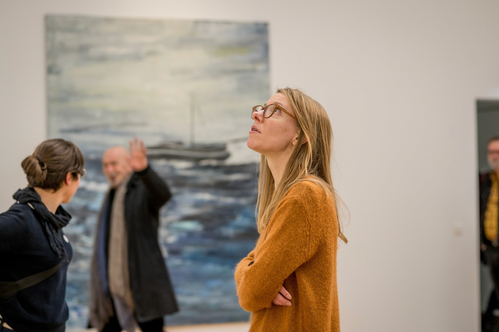
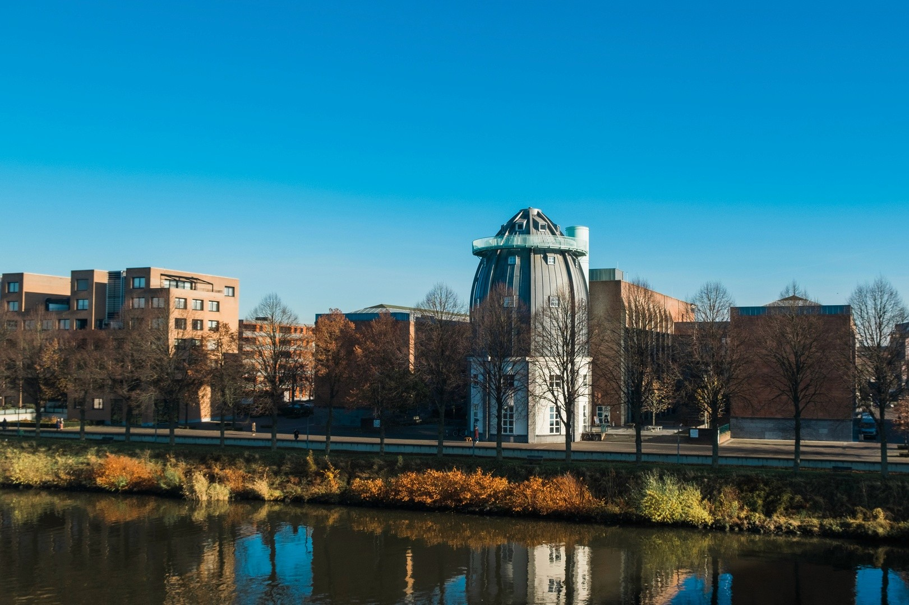

Bonnefanten Museum
How do you make a 16th-century exhibition resonate with a modern audience? That was the challenge behind my graduation project for the Bonnefanten Museum.
A Room
for Reflection
I designed an interactive experience that encouraged visitors to engage with The Seven Sins beyond simply viewing the artworks, inviting them to reflect on their own habits and impulses.

01
The Seven Sins
This exhibition is about the seven deadly sins by Pieter Bruegel. This 16th-century portrayal prompts reflection on human nature that is still recognizable today.
02
Art Doesn't End
at the Canvas
The ultimate aim is to enrich both the exhibition and the visitor experience by prompting reflection on these timeless themes through interaction.
Three Fases
of Reflection
03
During the research we defined these three stages of reflection. These stages are the framework of the buildup of the installation.
The Buildup
04
In the room, you start with playing Link-It, a game based on the artworks from the exhibition and sins to provoke a first association.